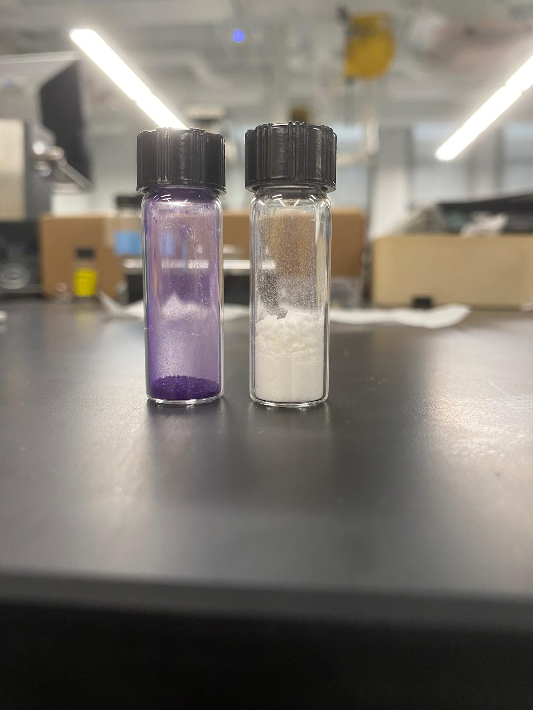
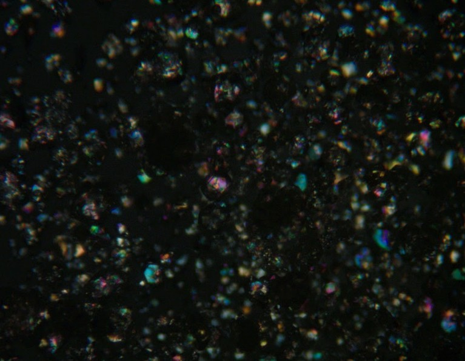
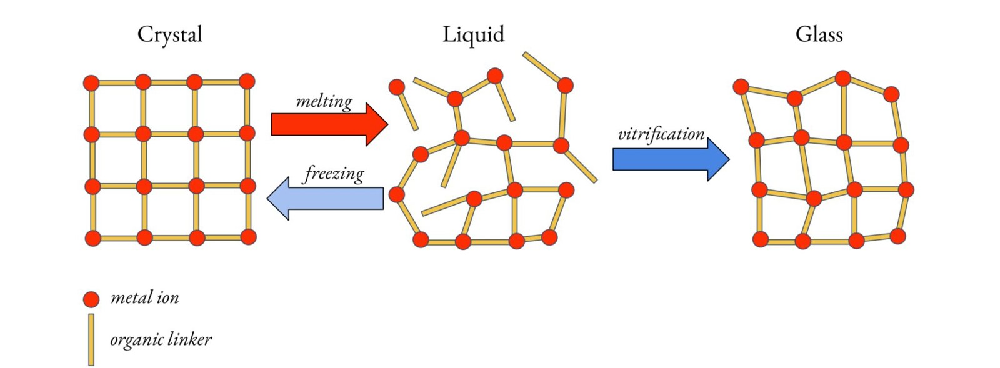
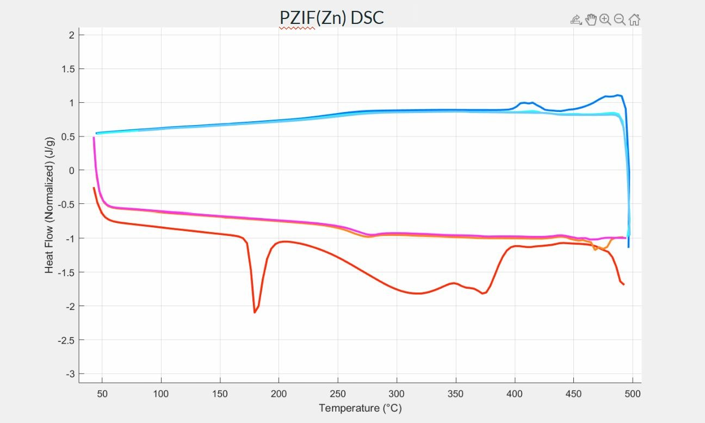
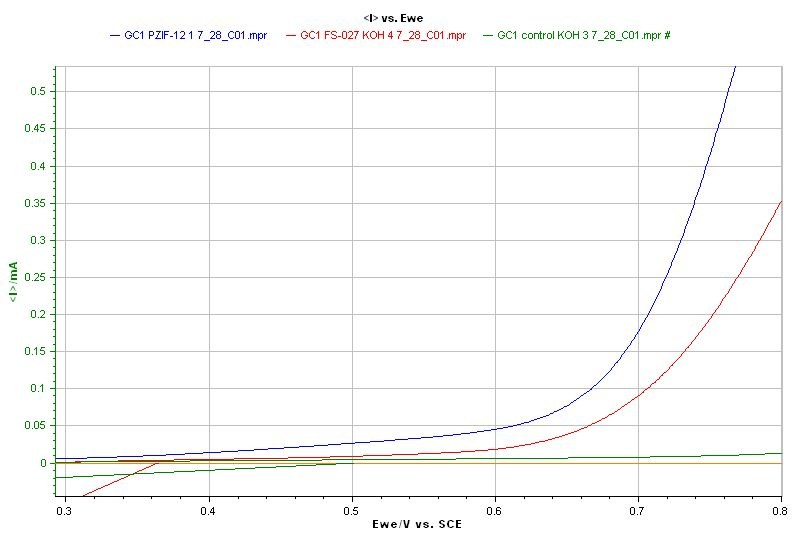
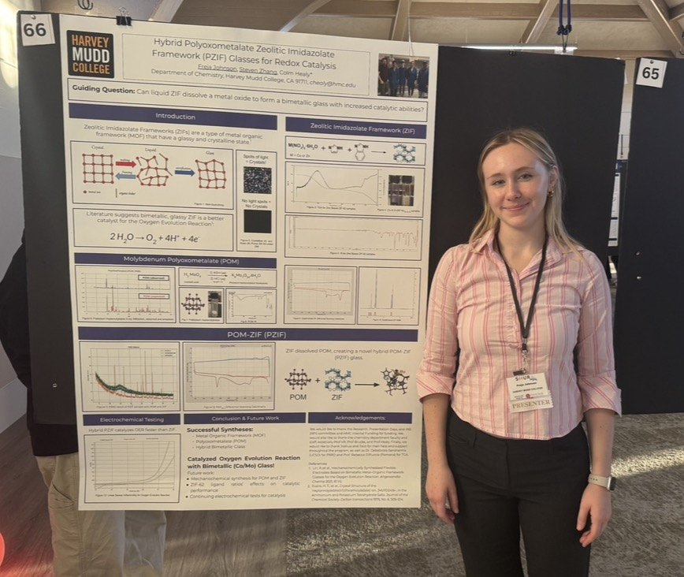
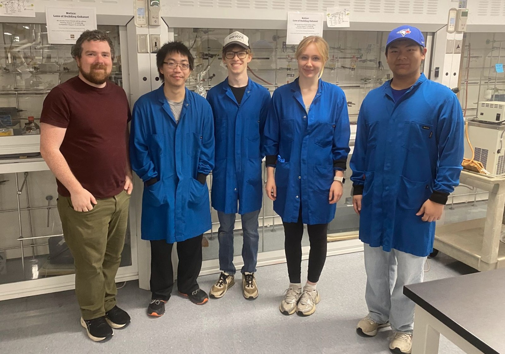

01 · METAL-ORGANIC FRAMEWORK
ZIF-62 (Co & Zn)
M(NO₃)₂·6H₂O + imidazole + benzimidazole → ZIF-62 (M = Co or Zn)
Synthesized cobalt- and zinc-based versions, then verified compositions with TGA, IR, NMR and DSC tests.
Undergraduate research in materials chemistry. I synthesized a new bimetallic glass from a metal-organic framework and a metal oxide cluster, and tested whether it was a more efficient catalyst for splitting water than existing alternatives.
View the research poster (PDF)
Can liquid ZIF dissolve a metal oxide to form a bimetallic glass with increased catalytic abilities?
Zeolitic imidazolate frameworks (ZIFs) are a type of metal-organic framework with both crystalline and glassy states: melting a crystal and quenching the liquid locks it into a glass. Literature suggests a bimetallic, glassy ZIF is a better catalyst for the oxygen evolution reaction (2H₂O → O₂ + 4H⁺ + 4e⁻), a key step in splitting water for clean energy.

Three materials, each made and confirmed before moving to the next.


I presented this work as a poster at the Southern California Undergraduate Research Conference, walking visitors through the synthesis route and the electrochemical results.


Funded by HMC Internal Funding through the Research, Presentation Days, and IRB committee. Thanks to Prof. Healy and the HMC Chemistry faculty and staff, Dr. Debobroto Sensharma (UCSD) for PXRD, and Prof. Rebecca DiPuccio (Pomona) for TGA.